Impact: the ESG and food-waste dashboard
SC-157 · Munchly's workspace · three options for Supply chain's ESG and food-waste savings dashboard, live from the ledger: what every cleared batch kept out of landfill, what was destroyed, what it was worth to the planet, and where every kilo went.
The maintainer (10 Oct), with a screenshot of the console's Food kept out of landfill card (SC-149):
“Supply chain can have some cool ESG & food waste savings dashboard”
Now
Priya reads the ESG figures as the Ledger's Impact reading (SC-121): one headline with its working, the period drawn as its batches, and the batches by month. The BRSR table is an export. Nothing shows the food saved over time, where the kilos went, how the two distributors or the eight products compare, or how a quarter stands against the one before.
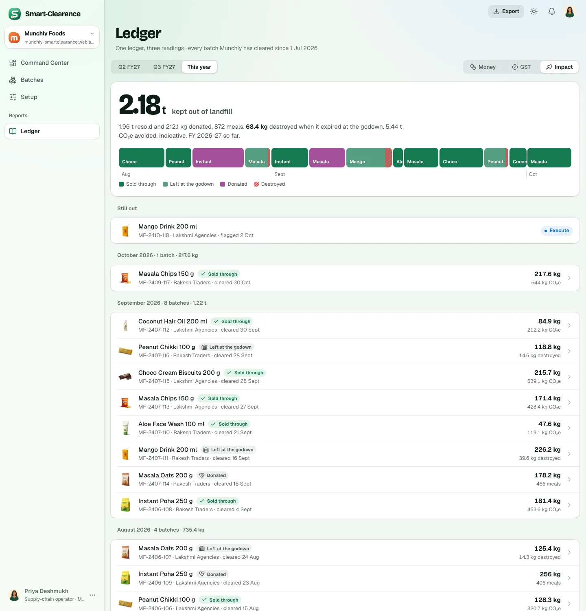
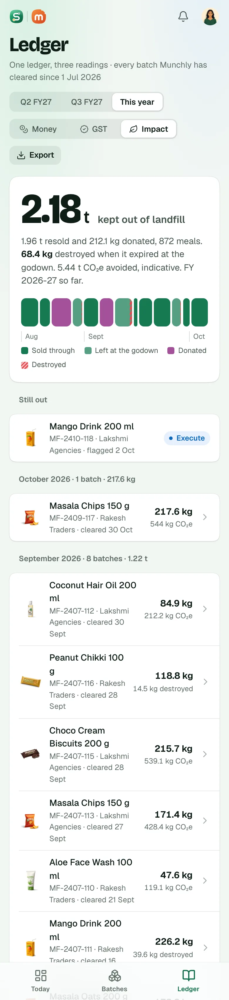
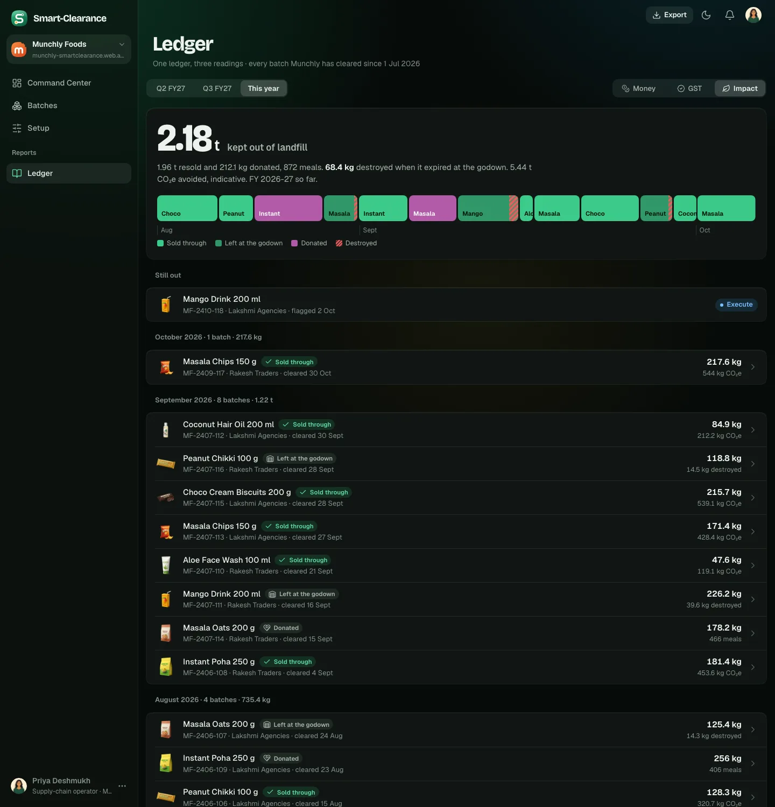
In every option
Option A · Impact, its own page
RecommendedA new page under Reports, beside the Ledger. Four tiles (kept out of landfill, destroyed with the share saved, CO₂e avoided, meals), each against the period before and with its weeks as a sparkline. Food, by week: the console's chart form on the workspace's own weeks, with a crosshair and “Show as a table”. Where the kilos went, by channel. By distributor or by product, resold, donated and destroyed on one scale. Then BRSR Principle 6's row with its evidence, and Export.
- Trade-offs
- A dashboard in the console's language, so the two surfaces read alike; the most to look at, and the clearest place to send a judge.
- One more place in the sidebar (Ledger, Impact), and a fifth tab on the phone's bar.
- The Ledger's Impact reading stays as it is, so two places read kilos.
- What the code touches
- design3
screens/finance.jsx(anImpactscreen and its charts),roles.jsx(the route and the nav item),screens.css; core'sscreens/finance/Impact.svelte,RoleApp's route and the sidebar. backend-api's ledger gains the kilos by week, by distributor and by product per period (WsLedgerPeriod), or the screen derives them from the rows it already has.
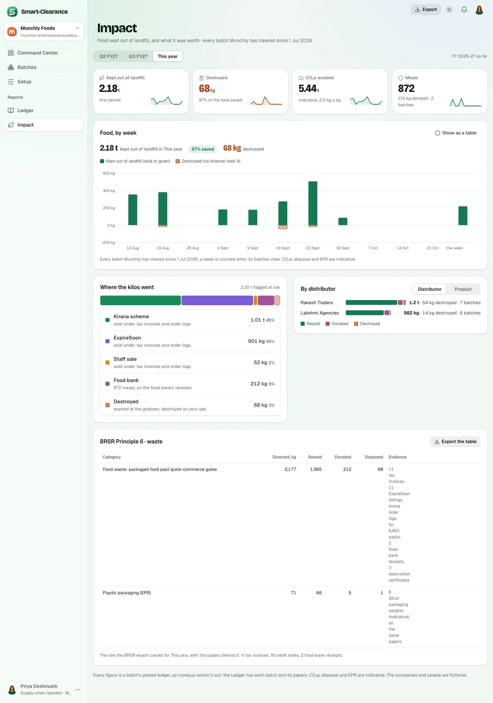
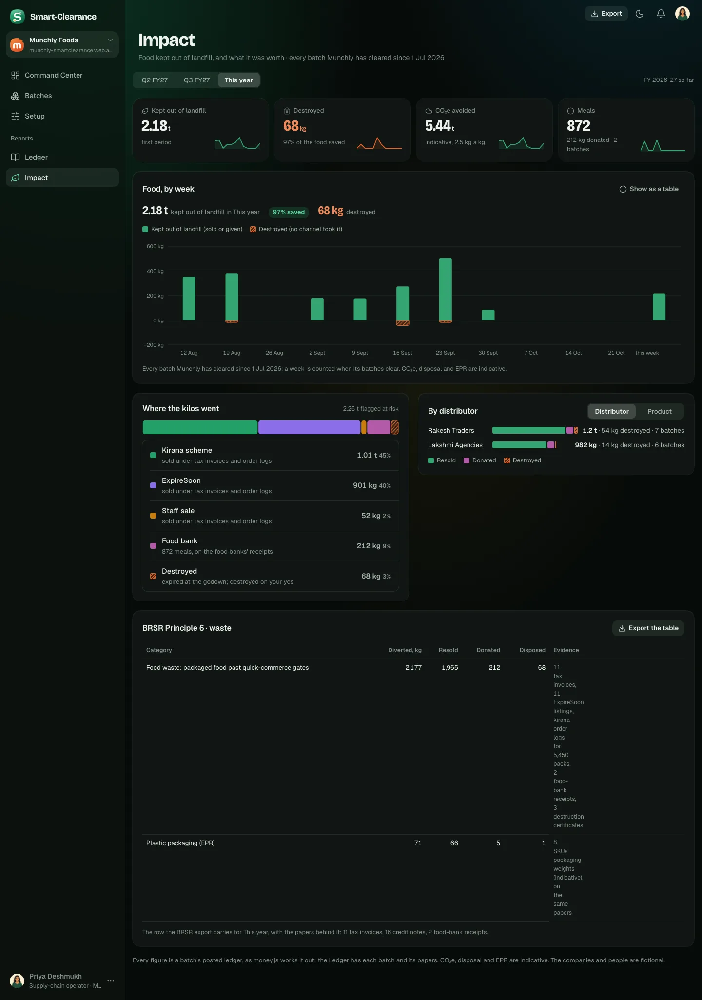
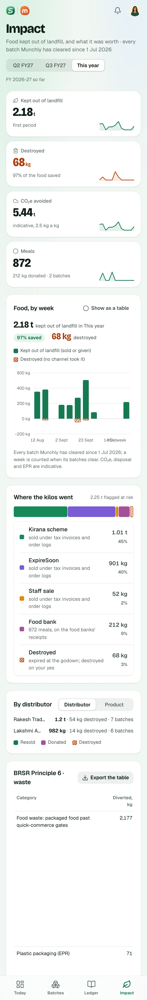
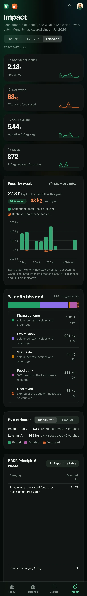
Option B · The Impact reading, grown
No new page. The Ledger's Impact reading becomes the dashboard: the headline and its working stay at the top, then three tiles, Food, by week, Where the kilos went and By distributor, and under them the period's batches by month as today, each opening its page. Money and GST read as before.
- Trade-offs
- One ledger stays one ledger: the figures, the charts and the batches on one page, nothing added to the sidebar.
- The page grows long, and the charts sit under a reading switch, so they are a tap further than a page of their own.
- No BRSR row on the page (the export carries it, as today).
- What the code touches
- design3
screens/finance.jsx(the Ledger's Impact branch) andscreens.css; core'sLedger.svelte. The same ledger series as A.
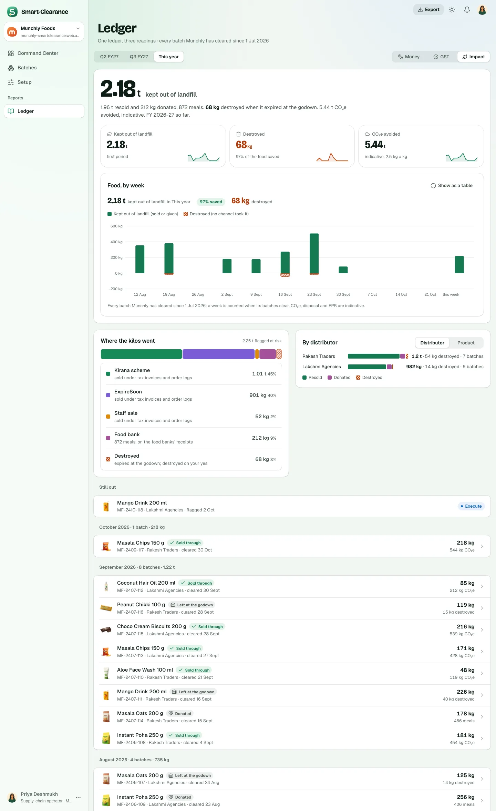
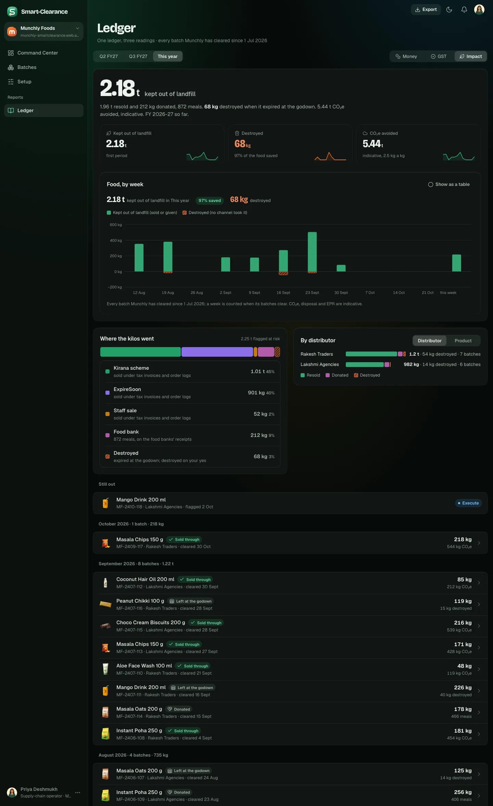
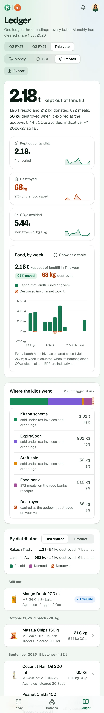
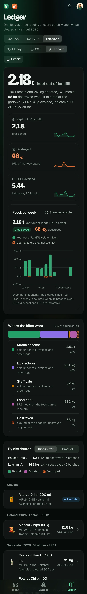
Option C · The flow
Impact as its own page, told as one picture: every kilo the Watcher flagged flows to the channel that took it (the kirana scheme, ExpireSoon, the staff sale, the food bank) and on to kept out of landfill or destroyed, each ribbon as wide as its kilos, the ends carrying the figures (CO₂e, meals, the share saved). Under it, Food by week and BRSR's row. On a phone the flow becomes the channel bar.
- Trade-offs
- The most telling picture of what the product does: the kilos at risk, split by exit, and almost all of them kept out of the bin.
- Less to compare: no distributor or product breakdown, no period-before deltas on the picture itself.
- A flow diagram is new to the kit (the first Sankey), and needs a phone fallback.
- What the code touches
- As A, with a
Flowcomponent in place of the by-distributor and by-product cards.
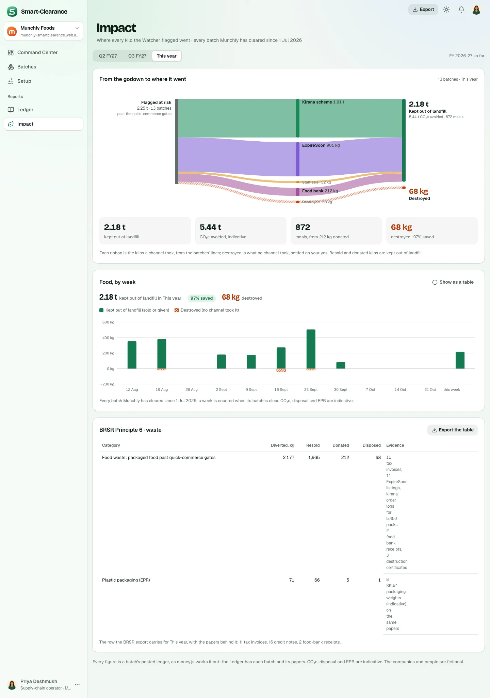
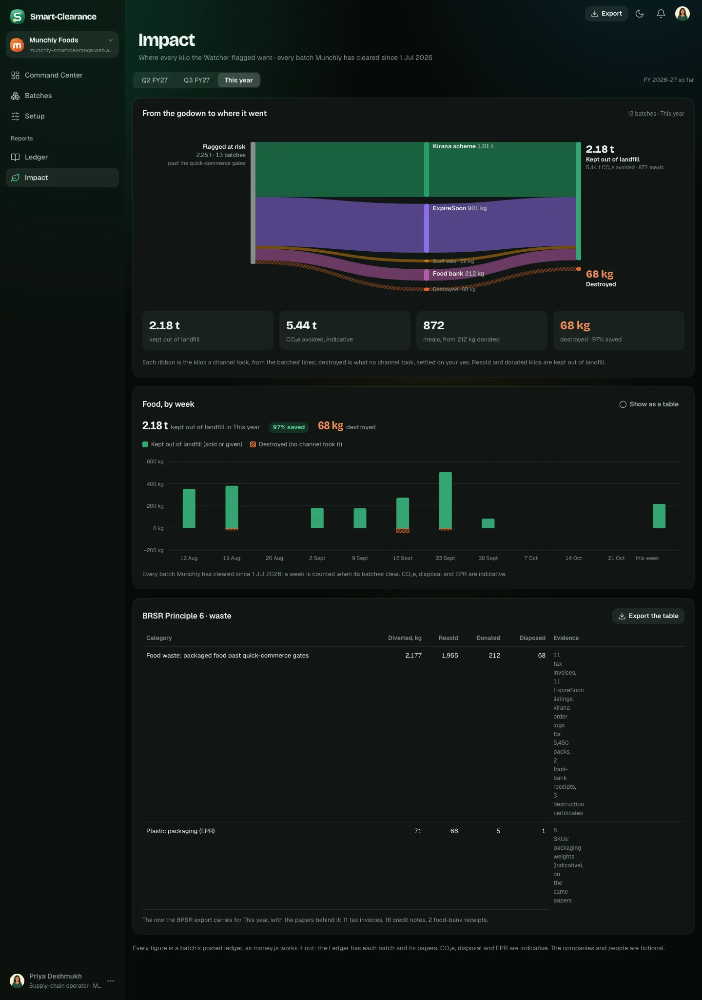
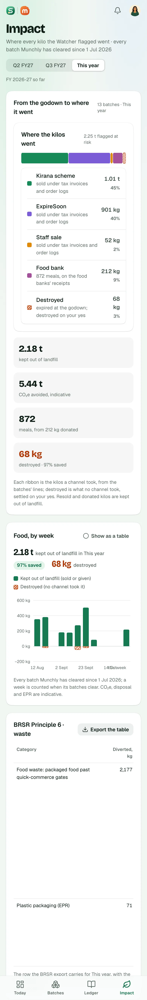
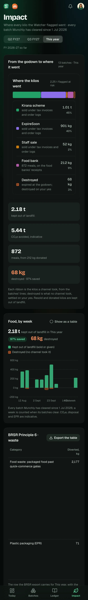
Recommended: A. A page of its own gives the ESG story room: the week-by-week picture the maintainer pointed at, the breakdowns that answer a buyer's questions (which distributor, which product), and the BRSR row with its evidence where Priya reads it, not only in an export. C's flow could join it later as one more card.
One question
Should the dashboard also stand on the Command Center as one small card (this quarter's kilos kept out, CO₂e and meals, opening the page), so Priya sees it every morning, or stay under Reports only?